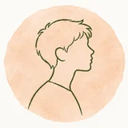

Il lavoro con i genitori
Accompagnare la crescita, insieme.
Dedico ai genitori un tempo per confrontarsi, sia in un percorso di sostegno dedicato sia mentre seguo un figlio.
Il sostegno alla genitorialitàPercorsi di psicoterapia
Dott.ssa Valentina Ronchi
Psicologa, specializzanda in psicoterapia
Un percorso di scoperta di sé
attraverso l'incontro con l'altro.
L’energia vitale
Ci sono esperienze che ci fanno sentire più in contatto con noi stessi. Per qualcuno è la musica, per altri la natura, una relazione, un gesto creativo, il movimento o il tempo passato in famiglia. Ognuno riconosce a modo proprio ciò che lo fa sentire vivo.
A volte è difficile dare un nome a ciò che sentiamo o capire di che cosa abbiamo bisogno. A Cantù e online propongo colloqui e percorsi di sostegno psicologico, uno spazio in cui avvicinarci a queste domande con il tempo che richiedono.
Nell’incontro con una persona che ascolta con attenzione possiamo accorgerci di emozioni, bisogni o risorse che, da soli, facevamo fatica a riconoscere.
Conosco me stesso anche attraverso te.La natura nella mia storia
A chi mi rivolgo
Bambini, adolescenti, giovani adulti, adulti e genitori. Il percorso prende forma a partire dalla storia di ciascuno.
Di cosa mi occupo
Capire insieme quello che un bambino prova e come lo esprime.

Uno spazio per parlare di sé, delle relazioni e dei cambiamenti.

Un tempo per rileggere ciò che si vive e dare ascolto ai propri bisogni.
Incontri di sostegno alla genitorialità, anche durante il percorso dei figli.
Il lavoro con i genitori
Dedico ai genitori un tempo per confrontarsi, sia in un percorso di sostegno dedicato sia mentre seguo un figlio.
Il sostegno alla genitorialitàChi sono
Psicologa, specializzanda in psicoterapia presso la scuola ISIPSE’ di Milano, con orientamento alla psicoanalisi relazionale e alla Psicologia del Sé.
La mia formazioneDove ricevo
A Cantù ricevo su appuntamento presso La Corte dei Calzini Spaiati. Offro anche consulenze online.
Lo studio e gli incontri online